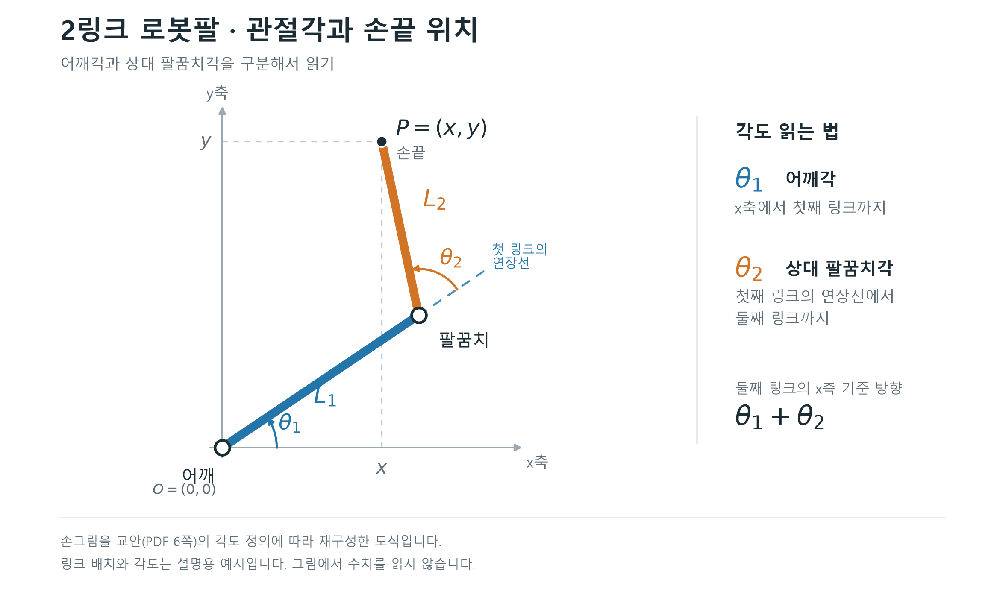

01 / TWO LINKS
막대 두 개를 움직이면
맨 끝은 어디에 있을까요?
링크는 막대, 조인트는 연결 관절이라고 생각하세요. 어깨에서 위팔이 돌고, 팔꿈치에서 아래팔이 꺾입니다.

순기구학: 관절 각도를 알고 있을 때, 손끝이 어디에 있는지 계산하는 것입니다.
위팔 40cm, 아래팔 30cm를 오른쪽으로 쭉 펴면 손끝은 70cm 지점에 있습니다. 어깨를 고정하고 팔꿈치만 위로 90° 굽히면 손끝은 오른쪽 40cm, 위쪽 30cm에 있습니다.
“위팔 길이만큼 이동”은 무슨 뜻일까요?
실제로 위팔이 미끄러진다는 뜻과는 다릅니다. 계산하면서 어깨에서 위팔을 따라 팔꿈치 위치를 찾아간다는 뜻일 수 있습니다.
어깨→위팔을 따라 팔꿈치 찾기→꺾인 방향으로 손끝 찾기
수식으로 연결하기
첫 막대 방향은 θ₁, 둘째 막대 방향은 θ₁+θ₂입니다. 각 막대의 가로 몫과 세로 몫을 더합니다.
x = L₁ cos θ₁ + L₂ cos(θ₁ + θ₂)
y = L₁ sin θ₁ + L₂ sin(θ₁ + θ₂)
y = L₁ sin θ₁ + L₂ sin(θ₁ + θ₂)
출처와 참고 자료
교안 PDF p.6~8. “예제는 하나”, “윗팔 이동”이라는 수업 발언의 정확한 의도는 원문 메모에 미확인으로 보존했습니다.